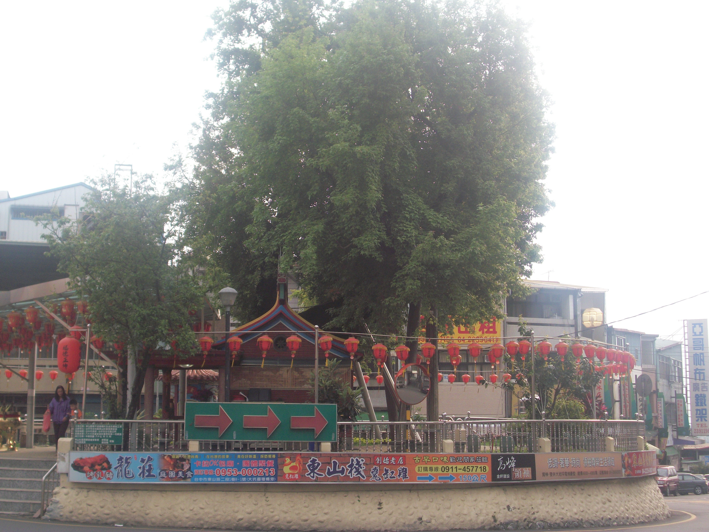

大坑風景區位於台中市北屯區，成立於民國65年，是由台中市政府進行開發的。整個風景區的海拔從112公尺至860公尺不等。起初，這片區域被稱為「大坑」，地名的由來是因為早期居民主要聚集在一個寬闊的坑谷之中。
大坑風景區的歷史根基深厚，最初的居民大多是客家人，而在更早的時候，這個地區則是平埔族的分佈地。如今，大坑風景區以其自然度最高的特質聞名，擁有30多種的落葉樹，每到乾濕季節交替之際，金黃的落葉滿地，呈現美不勝收的景象，媲美奧萬大的秋風落葉，是市民假日休閒、遊憩、森林浴的理想去處。

大坑原為平埔族的活動地，後來被客家人開墾，居民聚集於寬闊坑谷之中形成聚落，因此得名為「大坑」。在今天的三光里，地處交通要衝，被稱為「大坑口」。
在日治時期，大坑設有莊並置三堡，即今天的民德里、大坑里、東山里。大坑曾是台灣最早的菸草生產地之一，雖然現在菸葉業已式微，但區域內仍保留一、兩座煙樓，成為人們緬懷的地方。此外，大坑地區也出產麻竹筍、柑橘、荔枝、文旦、文心蘭等農產品。

在1976年，台中市政府進一步開發該區域，正式成立大坑風景區，範圍包括民德、大坑、東山、民政與廍子等五里。這使得大坑風景區成為一個結合歷史、自然美景和農業文化的綜合性旅遊勝地。